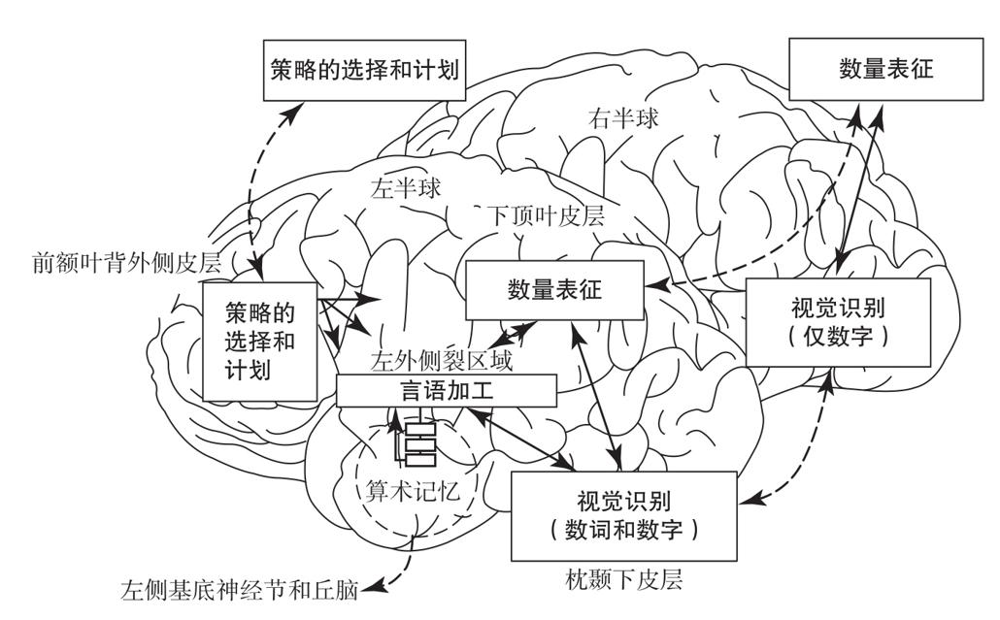
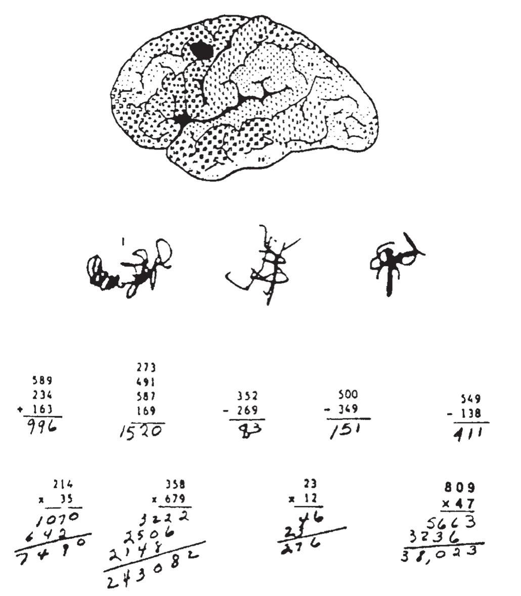
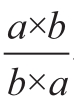
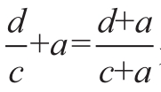

数字的含义并非唯一分布于多个脑区的知识。想一下所有你所知道的算术技能：用阿拉伯数字或数词来读写数字，理解它们和出声地说出它们；加、减、乘、除；等等。对大脑皮层损伤患者的研究表明，每种能力都依赖一张高度特化的神经网络，这些网络之间通过多重并行的神经通路进行交流。在人类大脑中，劳动分工并不是空谈。根据我们计划完成的任务，我们所操纵的数字进入不同的“大脑信息高速公路”。图7-3呈现了这些神经网络中的一小部分。

两个大脑半球都能操作阿拉伯数字和数量，但只有左半球能够获取数字的语言表征，以及算术口诀表的言语记忆。
图7-3 参与数字加工的脑区的假想图表（部分）
资料来源：Dehaene & Cohen, 1995。
下面来讨论一下阅读。我们是否使用相同的神经回路来识别阿拉伯数字5和单词five？很可能不是。视觉识别作为一个整体依赖两个大脑半球后部的脑区，这一区域被称为“枕颞下皮层”（inferior occipito-temporal cortex）。然而，该区域被划分成高度特化的子系统。对裂脑患者的研究表明，大脑左半球的视觉系统能够识别阿拉伯数字和数词，而右半球的视觉系统只识别简单的阿拉伯数字。另外，在大脑左半球后部，不同类别的视觉客体，如单词、阿拉伯数字，还有面孔和物品，似乎都由专门的神经通路负责。因此，左侧枕颞区域的某些病变只破坏了对词汇的视觉识别。这些患者表现出的症状是“纯失读”（pure alexia）或“不伴失写的失读”15（alexia without agraphia）。“纯失读”意味着他们不能读单词，但是他们完全能够理解口头语言，“不伴失写的失读”意味着他们仍然能写出单词和句子，但完全不能读出自己刚写的内容。下面是一位纯失读症患者试图读出单词“girl”时发生的典型对话：
患者：那是on……那是“O，N”……“on”……对不对？这里有3个字母，像“E，B”……我不知道这是什么意思……我看不懂它……我要放弃了，我做不到。
测试者：试着一个字母一个字母地读。
患者：这些？它是……“B”……“N”……“I”……我不知道。
尽管完全不能识别单词，这些患者通常仍保留着很好的辨别人脸和物品的能力。可见，视觉识别并不会整体受损，只是专门用于识别字符串的特定子系统出现了问题。重点是，对阿拉伯数字的识别能力通常也会被保存下来。1892年，法国神经学家朱尔·德热里纳（Jules Déjerine）报告了第一个被诊断为纯失读症的个案。该患者不能辨认单词，奇怪的是，他也不能辨认音符，但他仍能读阿拉伯数字和数字符号，甚至能进行长串的书面运算16。1973年，美国神经学家塞缪尔·格林布拉特（Samuel Greenblatt）描述了一个案例，患者的情况与前述个案相似，除此之外，患者仍有完整的视野和颜色视觉17。
同样也有关于逆向分离的记录。英国国家神经病学和神经外科医院的莉萨·奇波洛蒂（Lisa Cipolotti）及其同事近期发现了一位患者，他在阅读阿拉伯数字时存在障碍，在阅读单词方面却完全没有困难18。这个案例表明，单词和数字识别依靠人类视觉系统中不同的神经回路。由于它们临近解剖区域，因此通常会同时受损。但是在某些罕见的案例中，我们可以证明它们实际上是有区别和可分离的。
在书写数字和大声说出数字之间也发现了相似的分离模式。我在本章开始的时候对患者H.Y.做了简单的描述，需要大声说出数词时他会混淆数字19。然而，书写阿拉伯数字时他却没有任何困难。因此，他可能会说“2乘以5是13”，但他总会正确地写下“2×5=10”。显然他仍然保存着有关乘法表的记忆。只有在他试图提取结果的发音时才会出错。弗兰克·本森（Frank Benson）和玛莎·登克拉（Martha Denckla）也遇到过这样一位患者，当他解答“4+5”时，口头回答是8，而写下的是5，但是他能够在几个数字中正确地指出答案9！20这位患者的有关数字的口头和书写产出神经回路都被破坏了，但视觉识别和计算并没有受到影响。
皮层损伤的高度选择性似乎总会让我们措手不及。帕特里克·韦斯蒂彻尔（Patrick Verstichel）、劳伦特·科恩和我研究了一位患者，每当他试图讲话时总是胡言乱语，让人难以理解（“I margled the tarboneek placidulagofalty stoch……”）21。通过对这一现象的认真分析，我们发现，语言产出的一个特定阶段受到了无法弥补的损害，这个阶段负责把音素组成单词的发音。然而，数词莫名其妙地逃脱了这种胡言乱语。当患者说数字22时，他绝对不会说出像“bendly daw”这样令人迷惑的话。但是H.Y.偶尔会使用一个数字代替另一个数字，例如将22说成52（这种全词替换在除数字以外的其他单词中非常罕见）。可见，即便在负责言语产出的脑区的深处，也存在着专门负责装配数词的特异化神经回路。
在书写方面也有极为相似的分离。史蒂文·安德森（Steven Anderson）、安东尼奥·达马西奥（Antonio Damasio）和汉娜·达马西奥（Hannah Damasio）描述了一位患者，在一个很小的脑部病变破坏了该患者部分左侧前运动皮层（left premotor cortex）后，她突然变得不能读写22。在被要求写下自己的名字或英语单词“dog”时，她只能写出难以辨识的潦草字迹。但她读写阿拉伯数字的能力保存得很完整，患者仍然能用和她脑部病变前一样工整的笔迹解答复杂的数学问题（见图7-4）。

由于左侧前运动皮层的小面积损伤，该女性不能读写单词，但仍能读写阿拉伯数字。患者试图写下她的名字、字母A和B，以及单词“dog”时，留下了这些潦草的字迹。然而，下方运算的样例表明她书写阿拉伯数字完全没问题。
图7-4 左侧前运动皮层受损的影响
资料来源：重印自Anderson et al., 1990，版权所有©1990 by Oxford University Press。
通过这一系列类似的个案，我们得出了一个显而易见的结论，即几乎所有的加工，包括视觉识别、语言生成、书写，其处理数字的皮层脑区都部分地不同于处理其他词汇的脑区。这些区域中的多数没有在图7-3中呈现，原因很简单，我们还不知道它们在解剖结构上的位置。但是来自脑损伤的分离至少证明了它们确实存在。
现在我们讨论一下结论。我们已经详细描述了下顶叶皮层在数量加工，尤其是在减法运算中的重要性。但加法表和乘法表呢？我的同事劳伦特·科恩和我认为，它们可能涉及另一个神经回路，一个包含大脑左半球基底神经节（basal ganglia）的皮层-皮层下回路23。基底神经节是位于皮层下的多个神经元核团。它们从多个脑区收集信息，加工信息，并通过丘脑中的多重并行回路将信息传送回来。尽管我们对皮层-皮层下回路的确切功能仍知之甚少，但它们确实参与了自动动作序列的记忆和复制，包括言语序列。劳伦特·科恩和我认为，乘法会激活这些回路之一，例如，“十”作为词语序列“二乘以五”的补充脱口而出。更确切地说，负责编码句子“二乘以五”的分散神经元活动激活了位于基底神经节内神经回路中的神经元，这些神经元反过来激活了位于皮层言语区中负责编码“十”这个词的一系列神经元。其他的自发诵读现象，如谚语和诗歌等可能都是以类似的方式存储的。
我们的猜测得到了几个因左侧皮层下病变导致失算症的案例的支持。大脑左半球深层神经通路损伤而皮层未受损，这种情况偶尔会造成算术障碍。我对患者B太太进行了一项测试，她的左侧基底神经节曾受到损伤24。尽管存在这样的损伤，她仍能读出数字，并能听写数字。她的识别和产出数字的回路完好无损。但皮层下病变戏剧性地影响了她的运算能力。B太太对于数学乘法表的记忆很凌乱，以至于在计算像“2×3”或“4×4”这样简单的问题上，她都会出错。
与失去数感的M先生形成了鲜明的对比，B太太仍表现出很好的对数量的理解（她的下顶叶皮层完全没有受损）。她可以比较两个数字的大小，可以找出哪个数字落在它们之间，甚至能通过在心里数由两个物品组成的三个集合计算“2×3”。她在解决类似“3-1”或“8-3”这种简单减法问题时，也没有遇到任何困难。B太太遭到损伤的狭小领域涉及从机械记忆中提取熟悉的词汇序列。她想不起那些曾经很熟悉的字符串，如“三九二十七”或“二四六八十”。在测验记忆是否正常运作的环节，我要求B太太背诵乘法表、字母表、一些祈祷词、童谣，以及诗歌，我们发现对所有这些形式的机械言语知识的记忆都受到了损伤。当我要求B太太背诵一首像《小星星》一样著名的法国童谣时，她经历了极大的困难。她不能背诵字母表中除ABCD以外的其他字母。她也会混淆祈祷词。这些障碍真让人吃惊，因为B太太不仅是一位虔诚的信徒，而且也是一位最近刚退休的教师，她一生都在背诵这些句子。我们还不清楚乘法表、祈祷词、童谣是否都存储在相同的神经回路中，但至少它们使用的是并行的、很可能相邻的、位于基底神经节的神经网络，B太太的皮层下病变致使它们同时受损。
迄今为止，本书只关注了基础算术。那么更高级的数学能力的情况如何呢，例如代数？我们是否应该假设它们涉及了其他神经网络？奥地利神经心理学家玛格丽特·希特梅尔-德莱泽尔（Margarete Hittmair-Delazer）的发现似乎消除了这个疑问25。她发现，失算症患者未必会丧失有关代数的知识。她的一个患者和B太太一样，由于左侧皮层下病变而失去了对加法表和乘法表的记忆。但他仍然能够使用复杂的数学公式解决算术问题，这表明他很好地掌握了算术概念。例如，他仍能把“7×8”当作“7×10-7×2”来解决。另一位患者获得过化学博士学位，其失算症的程度已经很严重，他不能完成“2×3”“7-3”“9÷3”或“5×4”这样简单的计算。然而，他依然能完成抽象的数学运算。通过聪明地使用数学运算的交换律、结合律和分配律，他可以把

化简为1，或者把a×a×a化简为a3，也能够判断出等式
是错误的。虽然到目前为止，对这个现象的研究还非常少，但是这两个案例表明，与我们的直觉相反，负责代数知识的神经回路在很大程度上独立于心算所涉及的回路。